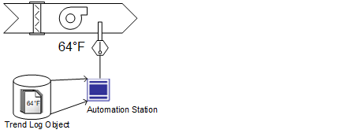
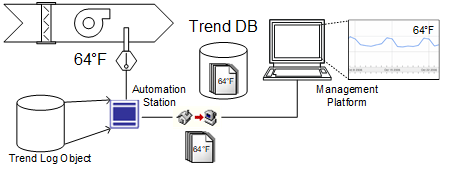
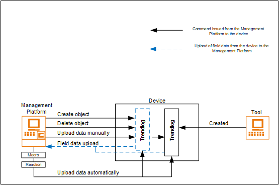

Offline Trends
Offline trend data is used for the long-term storage and retrieval of historical data for the analysis of entire plants or single processes.
With offline trends, data is recorded directly in the automation station.
You can retrieve the data as needed or automation stations can automatically upload the data.
Offline trend data can be recorded and saved by Trendlog objects within the automation and control system even when the management station is not connected.
The recorded data can then be saved in the trend database. Offline trend data can be retrieved and displayed in the trends.
You can create an offline trend to assign the outside temperature to the Trendlog object in the automation station if you want to calculate energy consumption and need the outside air temperature series for measured values. You can then manually or automatically (periodically) upload the recorded temperature data to store in the management station.
Phase 1: Record Offline Trend Data |
|
 | Trend data is saved locally to the Trendlog object in the automation station. |
Phase 2: Upload Offline Trend Data |
|
 | Trend data is uploaded if:
|
You can create and delete BACnet objects without engineering tools from the applicable manufacturer. The corresponding BACnet function must be supported by the automation station from the given manufacturer.


NOTE:
Trendlog or Trendlog multiple objects that are created permanently with the engineering tool cannot be deleted from the Management Platform. In the image above, the Trendlog within the solid black box represents the Trendlog created with the engineering tool.
The Trendlog within the blue dashed box represents the Trendlog created on the Management Platform and which can be deleted.
NOTICE

Validated Projects
Specific critical environments (for example, pharmaceutical installations and processed) require a high degree of safety and traceability of all operational workflows and user activities. A validated plant can lose its validity or must be revalidated by adding or losing BACnet objects. Therefore, do not use this function, or do not enable it in the application rights.